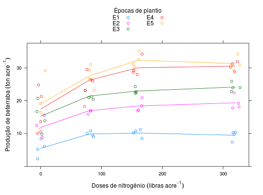

Experimento em delineamento de blocos casualizados cujos níveis dos fatores, época de plantio e nitrogênio, foram casualizados em faixas. A variável reposta observada foi a produção de beterraba.
Um data.frame com 80 observações e 4 variáveis, em que
nitroepocablocoprodNa figura abaixo, tem-se a organização dos 4 blocos, bem como dos níveis de época de plantio e nitrogênio em cada um deles. No bloco 1 (B1), a faixa em cinza claro horizontal indica a unidade experimental da época 4 (E4) e a faixa cinza escuro vertical a unidade experimental para o nível de nitrogênio 80 (N 80). A cédula preta é a unidade experimental da combinação dos níveis dos fatores.
BANZATTO; KRONKA (2013), Quadro 6.4.2, pág. 163.
library(lattice) data(BanzattoQd6.4.2)#> Warning: data set ‘BanzattoQd6.4.2’ not foundstr(BanzattoQd6.4.2)#> 'data.frame': 80 obs. of 4 variables: #> $ nitro: num 0 0 0 0 0 80 80 80 80 80 ... #> $ epoca: Ord.factor w/ 5 levels "E1"<"E2"<"E3"<..: 1 2 3 4 5 1 2 3 4 5 ... #> $ bloco: Factor w/ 4 levels "1","2","3","4": 1 1 1 1 1 1 1 1 1 1 ... #> $ prod : num 8.4 15.6 20.7 24.8 29.2 10.1 18.2 23.1 26.4 29.3 ...ftable(with(BanzattoQd6.4.2, tapply(prod, list(nitro = nitro, epoca = epoca, bloco = bloco), FUN = mean)))#> bloco 1 2 3 4 #> nitro epoca #> 0 E1 8.4 5.2 6.1 2.3 #> E2 15.6 12.5 10.5 8.8 #> E3 20.7 16.7 13.9 9.8 #> E4 24.8 21.3 13.6 10.1 #> E5 29.2 19.1 16.4 11.4 #> 80 E1 10.1 10.8 9.5 9.0 #> E2 18.2 16.9 16.9 15.9 #> E3 23.1 21.2 20.4 20.9 #> E4 26.4 26.0 29.5 23.1 #> E5 29.3 31.0 26.6 23.2 #> 160 E1 10.8 11.2 10.2 8.5 #> E2 18.5 20.9 16.9 17.2 #> E3 22.4 24.3 22.3 22.8 #> E4 34.2 29.2 28.0 28.7 #> E5 30.3 35.2 31.2 32.6 #> 320 E1 10.4 10.3 9.8 7.4 #> E2 22.4 19.2 18.1 17.8 #> E3 24.0 25.9 23.9 22.8 #> E4 30.2 31.2 28.8 31.9 #> E5 30.8 34.2 30.9 29.2xyplot(prod ~ nitro, groups = epoca, data = BanzattoQd6.4.2, as.table = TRUE, layout = c(NA, 1), jitter.x = TRUE, type = c("p", "a"), auto.key = list(title = "Épocas de plantio", cex.title = 1, columns = 2), strip = strip.custom(var.name = "Época", strip.names = TRUE), xlab = expression("Doses de nitrogênio"~(libras~acre^{-1})), ylab = expression("Produção de beterraba"~(ton~acre^{-1})))